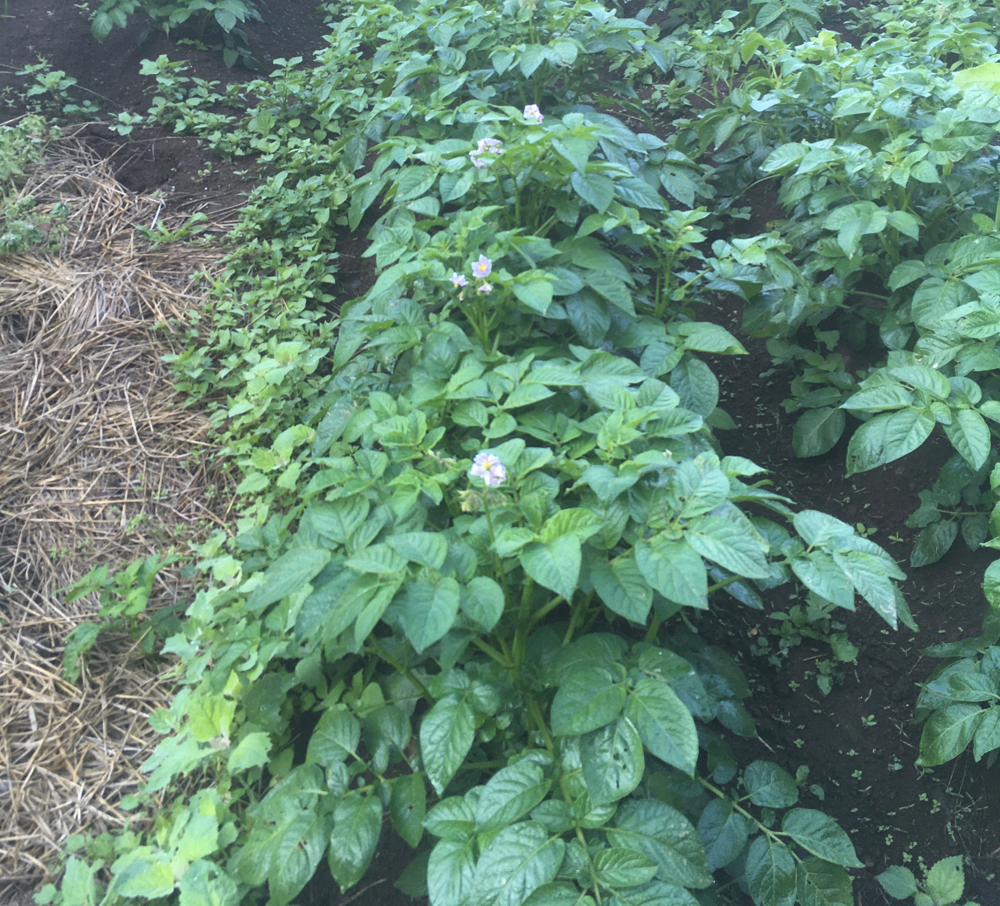
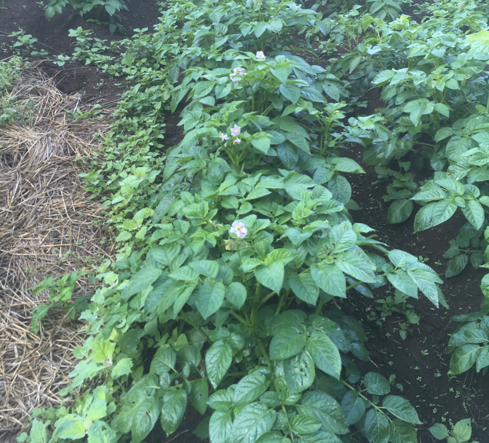

パン-Pain-
自家栽培した作物を使用するパンの試行錯誤やアイデアをまとめました。継続的な使用作物は「小麦（ユメカオリ）」と「じゃかいも（男爵）、などなど、、、
全て自家栽培のパンを美味くするのは難しいかもしれないが（これも作りたい！！！）既製品の力も借りながら挑戦します。」
パン-Pain-NO.1 2020/09/13/sat(曇) じゃがいもパン試作 しっかり芋の味がする！
 

試作のレシピは日本に製パン技術を伝えたレイモン・カルヴェル教授のレシピを参考にした。レシピの載っている本は僕より年上だった。じゃがいもはマッシュにして、
生地と練り合わせる。潰すので芋感はでないと思ったが、小さい粒で残った。味もじゃがいもの味がしっかりしていた（ポテチ的な風味と味）。驚いたのは、油脂や砂糖を入れずともパンが硬くならないことである。
お客様側からも扱いやすいパンになるのではないかと思う。